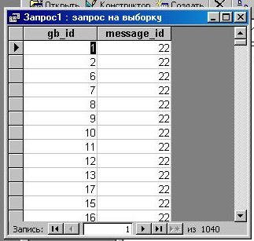
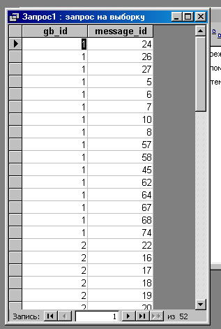
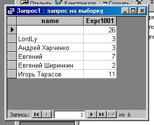

Выборка данных из нескольких таблиц
Теперь перейдем к рассмотрению запросов из нескольких таблиц. У нас в двух таблицах присутствует поле
с одним и тем же названием, поэтому язык SQL предусматривает возможность указывать название поля
в виде имя_таблицы.имя_столбца. В нашем случае: gb.gb_id или message.gb_id.
Давайте выберем пары: идентификатор гостевой книги, идентификатор сообщения. На
первый взгляд приходит следующее: SELECT gb.gb_id, message_id FROM gb, message.
Однако результатом будет декартово произведение, т.е. всевозможные комбинации -
20 записей из таблицы gb умножить на 52 записи из таблицы message получается 1040 записей.

Но нас интересуют только осмысленные комбинации, т.е. там, где совпадают значения полей gb_id,
поэтому необходимо добавить условие WHERE gb.gb_id=message.gb_id. Теперь записей стало 52, как и положено.

Для того чтобы выбрать другие поля, просто добавьте их в запрос, только лучше писать полное
имя, т.е. таблица.поле: SELECT gb.gb_id, gb.name, message.name, message_id FROM gb, message WHERE gb.gb_id=message.gb_id.
Теперь давайте посчитаем количество записей в каждой гостевой книге, только при этом выберем еще
и название гостевой книги.
SELECT gb.name, COUNT(*) from gb, message WHERE gb.gb_id=message.gb_id GROUP BY gb.name

Упражнения
- Выведите все записи из таблицы gb, а также количество сообщений в каждой гостевой книге.
|